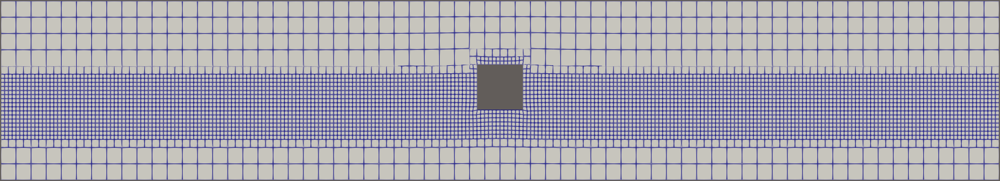
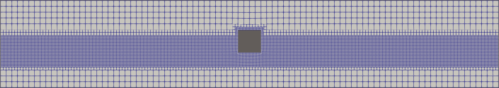
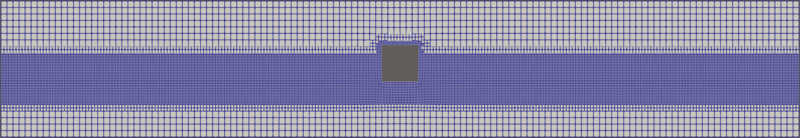
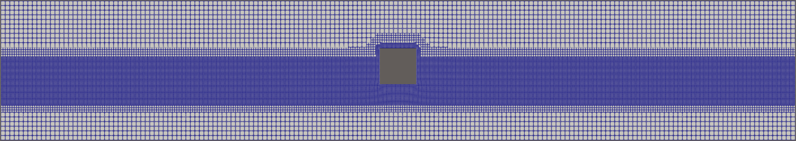
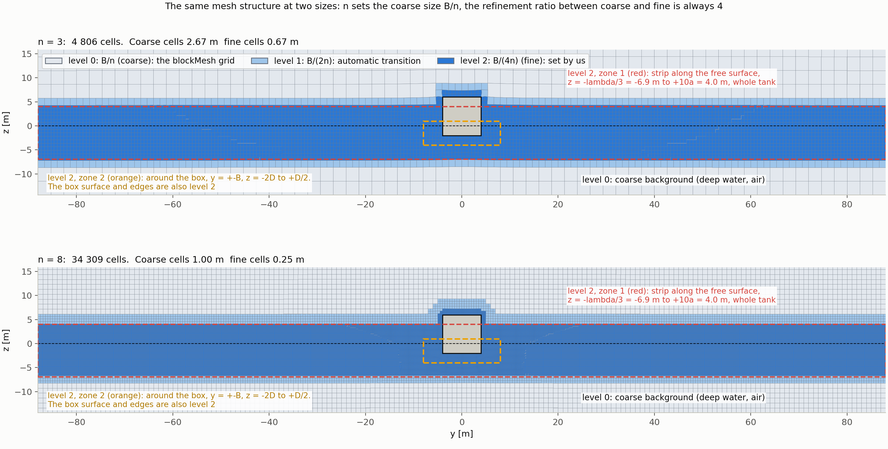
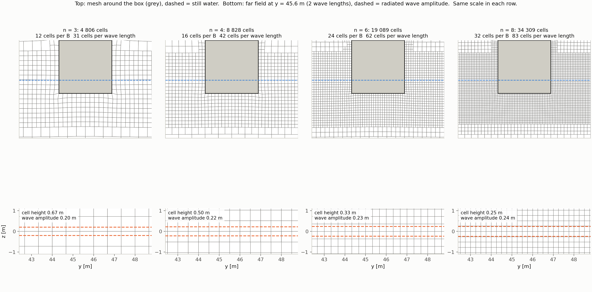
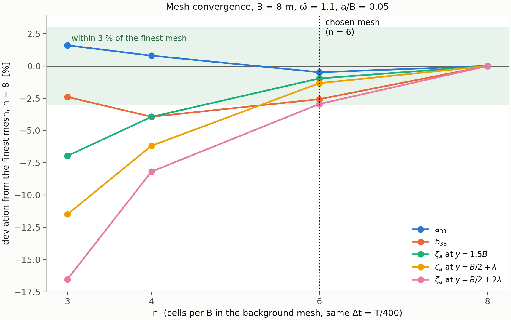
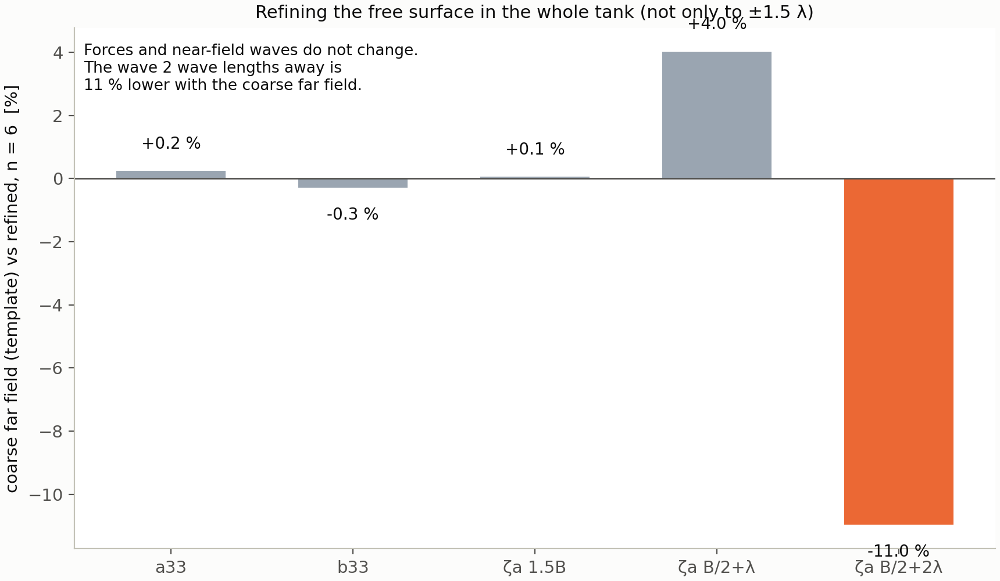

Mesh convergence study
Wang's case. How fine must the mesh be before the answer stops changing?
The requirements
Each requirement has a section further down the page that explains how we answered it. The sections follow the report. Sections marked coming are built step by step as we go through the assignment, and the link becomes active when the section is built.
| Requirement | Status | Short answer | Where we explain it |
|---|---|---|---|
| Select one of the cases | Done | Wang's case | Section 1 |
| Generate 4 different meshes, different number of cells per wavelength and systematically refined cells around the body | Done, varied together | n = 3, 4, 6, 8. One parameter n changes both. They are not varied separately. | Section 2 |
| Run simulations and produce convergence plots for the results | Done | Convergence plot (draft below, not in the report yet) | Section 3coming |
| Consider number of cells per wavelength, and per body-width | Done | Table in Section 2 | Section 4coming |
| Use blockMesh ... Consider a refinement strategy (snappyHexMesh block-refinement) | Done | blockMesh background grid, snappyHexMesh refinement boxes (Section 2) | Section 5coming |
| Consider possible numerical errors arising from grid size and nonuniformity | Partly | Grid size is covered. The transitions between refinement zones are not examined. | Section 6coming |
| Hint: check initial condition in Paraview | Partly | You have seen it. A screenshot is missing. | Section 7coming |
| Evaluate vertical grid size in terms of motion amplitude | Partly | Draft figure below. The text is missing. | Section 8coming |
| Consider grid size and time step size in terms generated wave period and length | Done | Cells per λ, Δt = T/400, Δt pairs (Section 3) | Section 9coming |
| The outcome of the sensitivity studies might have consequences on the choices in the main part | Done | n = 6 is used in the main study | Section 10coming |
| Each student is assigned a sensitivity study to perform and share the results in the group | Not done | To do in the report | Section 11coming |
Section 1: Select one of the cases built
Status: Done
The assignment says to select one of the cases. The mesh study is assigned to Wang in the group, so we use his case (Table 1).
| Quantity | Value |
|---|---|
| Box | B = 8 m, D = 2 m (B/D = 4), H = 8 m (H/B = 1), L = 24 m (L = 3B) |
| Motion | Heave |
| Frequency | ω̂ = 1.1, T = 3.65 s, λ = 20.8 m |
| Amplitude | a/B = 0.05 (a = 0.4 m) |
| Tank | 176 m long (84 m = 4.04λ from the box edge to each end wall), depth 14.4 m (0.69λ) |
| Time step | Δt = T/400 |
Table 1. The case used in the mesh convergence study.
How the values were found
Period T. The frequency is given as ω̂ = ω√(B/2g). Solving for ω gives
The period is
rounded to two decimals as the assignment asks.
Wave length λ. For deep water the dispersion relation is ω² = gk with k = 2π/λ, so
Draught, height and amplitude. D = B/(B/D) = 8/4 = 2 m and H = (H/B) B = 8 m. One of the four amplitude cases is selected, a/B = 0.05 (the same as in the template), so a = (a/B) B = 0.05 · 8 = 0.4 m.
Box length. The box length is L = 3B = 24 m. This follows the template, where the box is 15 m long for B = 5 m (L = 3B). We have only scaled it with B in the same way. The tank is only 1 m thick in the length direction, so the box only has to be longer than 1 m, and the flow is two-dimensional.
Tank. Following the template, the tank has four wave lengths of water on each side of the box:
The background mesh has cells of size exactly B/n, that is n cells per box width. This only works if the tank length is a whole number of box widths, so that the number of cells in the y direction is a whole number. The length is therefore rounded up to a whole number of box widths:
The tank is then 22 box widths long, which gives 22n = 132 background cells in the y direction for n = 6. From the box edge to each end wall the distance is (176 − 8)/2 = 84 m = 4.04λ (Figure 1).
Depth. The depth also follows the template:
Time step. The time step is Δt = T/400 = 3.65/400 = 0.009 s, that is 400 steps per period. It is chosen from the Courant number,
which is the number of cells the fluid moves in one time step. Here U is the fluid velocity and Δx is the cell size. The velocity is not set by us: OpenFOAM finds it as part of the solution in every cell, and the Courant number (computed from the volume fluxes through the cell faces) is written to the log during the run. The free surface solver needs Co well below 1. With Δt = T/400 the maximum Courant number is 0.13 for the coarsest mesh (n = 3) and 0.21 for the finest (n = 8), because a smaller cell size gives a larger Co for the same Δt. It is well below 1 for all four meshes. The same time step is used for all meshes, so that only the mesh changes. The effect of the time step on the results is studied separately.
Section 2: Four different meshes built
Generate 4 different meshes, different number of cells per wavelength and systematically refined cells around the body
Status: Done, varied together
This section answers the following requirement in the assignment:
Generate 4 different meshes, different number of cells per wavelength and systematically refined cells around the body.
We therefore have to show three things: that there are four meshes, that the number of cells per wavelength is different in each of them, and that the cells around the body are refined systematically.
The mesh has three cell sizes, given by the refinement level (Table 2).
| Level | Cell size | Where | Set by |
|---|---|---|---|
| 2 (fine) | B/(4n) | Strip along the free surface (z = −λ/3 to +10a, whole tank) and the surface of the box | Us, in snappyHexMesh |
| 1 (transition) | B/(2n) | Between level 2 and level 0 | Automatic, snappyHexMesh |
| 0 (coarse) | B/n | Deep water and air | Background mesh, blockMesh |
Table 2. Refinement levels of the mesh.
Table 3 gives the cell size and the number of cells per B and per λ for each mesh and level. Level 2 is the fine level, which resolves the waves and the box. Figure 2 shows the four meshes.
| n | Level | Cell size | Size [m] | Cells per B | Cells per λ |
|---|---|---|---|---|---|
| 3 | 0 | B/n | 2.67 | 3 | 8 |
| 1 | B/(2n) | 1.33 | 6 | 16 | |
| 2 | B/(4n) | 0.67 | 12 | 31 | |
| 4 | 0 | B/n | 2.00 | 4 | 10 |
| 1 | B/(2n) | 1.00 | 8 | 21 | |
| 2 | B/(4n) | 0.50 | 16 | 42 | |
| 6 | 0 | B/n | 1.33 | 6 | 16 |
| 1 | B/(2n) | 0.67 | 12 | 31 | |
| 2 | B/(4n) | 0.33 | 24 | 62 | |
| 8 | 0 | B/n | 1.00 | 8 | 21 |
| 1 | B/(2n) | 0.50 | 16 | 42 | |
| 2 | B/(4n) | 0.25 | 32 | 83 |
Table 3. The four meshes (B = 8 m, λ = 20.8 m). The numbers of cells are rounded.




Section 3: Convergence plots not built yet
Run simulations and produce convergence plots for the results
Status: Done
Not built yet. We build this section when we go through this requirement.
What we have so far: Convergence plot (draft below, not in the report yet)
Section 4: Cells per wavelength and body width not built yet
Consider number of cells per wavelength, and per body-width
Status: Done
Not built yet. We build this section when we go through this requirement.
What we have so far: Table in Section 2
Section 5: Refinement strategy not built yet
Use blockMesh ... Consider a refinement strategy (snappyHexMesh block-refinement)
Status: Done
Not built yet. We build this section when we go through this requirement.
What we have so far: blockMesh background grid, snappyHexMesh refinement boxes (Section 2)
Section 6: Numerical errors from the grid not built yet
Consider possible numerical errors arising from grid size and nonuniformity
Status: Partly
Not built yet. We build this section when we go through this requirement.
What we have so far: Grid size is covered. The transitions between refinement zones are not examined.
Section 7: Initial condition in ParaView not built yet
Hint: check initial condition in Paraview
Status: Partly
Not built yet. We build this section when we go through this requirement.
What we have so far: You have seen it. A screenshot is missing.
Section 8: Vertical cell size and amplitude not built yet
Evaluate vertical grid size in terms of motion amplitude
Status: Partly
Not built yet. We build this section when we go through this requirement.
What we have so far: Draft figure below. The text is missing.
Section 9: Grid size and time step not built yet
Consider grid size and time step size in terms generated wave period and length
Status: Done
Not built yet. We build this section when we go through this requirement.
What we have so far: Cells per λ, Δt = T/400, Δt pairs (Section 3)
Section 10: Use in the main study not built yet
The outcome of the sensitivity studies might have consequences on the choices in the main part
Status: Done
Not built yet. We build this section when we go through this requirement.
What we have so far: n = 6 is used in the main study
Section 11: Share with the group not built yet
Each student is assigned a sensitivity study to perform and share the results in the group
Status: Not done
Not built yet. We build this section when we go through this requirement.
What we have so far: To do in the report
Draft material and notes (not in the report yet)
Show the draft material that is not in the report
These parts were written earlier and are kept here so nothing is lost. They are not part of the report yet and are moved into the sections above when we go through the requirements.
Earlier draft of Section 2 (recipe, refinement zones, n table)
Draft: Four different meshes: different number of cells per wavelength and systematically refined cells around the body built
Generate 4 different meshes, different number of cells per wavelength and systematically refined cells around the body
Status: Done, varied together
The requirement has two parts: cells per wavelength (how well the waves are resolved) and systematically refined cells around the body. Here is how each is controlled.
The recipe, in three steps
- Coarse background grid (blockMesh). A rectangular grid over the whole tank with cell size B/n. n is the number of coarse cells per box width, and it is the one knob we turn.
- Refinement (snappyHexMesh). Two zones are refined to level 2, which means every cell is split in two twice in each direction, so the fine cells are 4 times smaller: B/(4n).
- Body zone: one box width on each side of the centre (y = ±B) and from 2D below to D/2 above the still water. The box surface and its edges are also refined to level 2.
- Free surface strip, the whole tank: from λ/3 below to 10 amplitudes above the still water. This is where the waves travel.
- 4 cells of gradual transition separate the levels, and the rest (deep water and air) stays coarse.
- 2D. The mesh is extruded to one cell in the length direction, so OpenFOAM solves a 2D problem.

What n controls
| n | Coarse cell B/n | Fine cell B/(4n) | Cells across B | Cells over the draught | Cells per λ | Cells in the mesh |
|---|---|---|---|---|---|---|
| 3 | 2.67 m | 0.67 m | 12 | 3 | 31 | 4,806 |
| 4 | 2.00 m | 0.50 m | 16 | 4 | 42 | 8,828 |
| 6 (chosen) | 1.33 m | 0.33 m | 24 | 6 | 62 | 19,089 |
| 8 | 1.00 m | 0.25 m | 32 | 8 | 83 | 34,309 |
Cells across B = 4n. Cells over the draught ≈ n, because D = B/4. Cells per λ = 4nλ/B, with λ/B = 2.6. The cell count is what OpenFOAM solves on, after the mesh is made 2D. The coarse cells are about 8 % taller than wide (for n = 6: 1.44 m against 1.33 m), so the fine cells are 0.36 m high and 0.33 m wide.
How this answers the requirement
- Cells per wavelength: set by the fine cells in the free surface strip: 4nλ/B along the wave, from 31 (n = 3) to 83 (n = 8).
- Systematically refined around the body: the body zone has the same fine cells, B/(4n), so the number of cells across the box and over the draught grows with n in the same proportion.
- Systematic: all four meshes are geometrically similar, because every length is scaled by 1/n. The steps are 4 to 3 (×1.33), 6 to 4 (×1.5) and 8 to 6 (×1.33).
What is kept fixed, and what that means
The refinement level (always 2, a ratio of 4 between coarse and fine), the size of the zones in metres, the 4 transition cells, the tank and Δt = T/400 are the same in all four meshes. So cells per wavelength and cells around the body are not varied separately: they come from the same n. To vary them separately, the body zone and the free surface strip would need different refinement levels. The only separate test we have is mesh_template (free surface refined only to ±1.5λ), see Section 3.

Earlier draft of Section 3 (convergence plots)
Draft: Run the simulations and make convergence plots built
Run simulations and produce convergence plots for the results
Status: Done

| Deviation from n = 8 | A33* | B33* | ζ at 1.5B | ζ at 1λ | ζ at 2λ |
|---|---|---|---|---|---|
| n = 3 | +1.6 % | −2.4 % | −7.0 % | −11.5 % | −16.5 % |
| n = 4 | +0.8 % | −3.9 % | −3.9 % | −6.2 % | −8.2 % |
| n = 6 | −0.5 % | −2.6 % | −1.0 % | −1.4 % | −3.0 % |
How to read it
- A33* and B33* change little whatever the mesh. The mesh matters little for the forces.
- The waves grow when the mesh gets finer, but by less and less: at 2λ +10 %, then +5.7 %, then +3.0 %. That is convergence. The wave grows because a coarse mesh damps it numerically.
- The wave decreases with distance from the box in every mesh. In potential flow it should be roughly the same everywhere. This is numerical damping and it is largest far away.
Free surface refinement

The time step matters more than the mesh
Same mesh with a different time step: the wave at 2λ changes 21 % (n = 3, T/200 to T/400), 10 % (n = 4, T/267 to T/400) and 5 % (n = 8, T/400 to T/533). From n = 6 upwards the time step matters more for the waves than the mesh. The time step study answers that.
Questions the chapter must answer
Why Wang's case, and why do the conclusions hold for the others?
See Section 1.
What is varied and what is kept fixed?
Varied: n (3, 4, 6, 8). Fixed: tank (4λ), depth (0.69λ), amplitude (a/B = 0.05), Δt (T/400), laminar flow, Euler time scheme and ramp-up (3 periods).
What is measured?
A33* and B33* (added mass and damping, non-dimensional), and the wave height ζa/a at three probes: 1.5B, B/2 + λ and B/2 + 2λ.
Has it converged?
The forces yes (under 3 % from n = 6 to n = 8). The waves are close: the change at 2λ shrinks from 10 % to 5.7 % to 3.0 %, but the wave is still a bit too low and limited by the time step. Four points give an uncertain convergence rate, so we have not computed a formal error estimate (Richardson or GCI).
What does mesh_template show?
That the free surface must be refined in the whole tank, not only near the box. Without it the wave at 2λ is 11 % lower, while the forces are the same.
Which mesh did we choose for the main study, and why?
n = 6. It is the coarsest mesh that is within about 3 % of n = 8 on every quantity, and it takes about 100 minutes against about 175 minutes for n = 8. The choice is a judgement between accuracy and time. It is not a requirement from Babak.
What about cell height against the amplitude?
At n = 6 the cell is about 0.33 m high, the motion amplitude is 0.4 m and the wave amplitude at 2λ is about 0.23 m. That is only 1 to 1.5 cells per amplitude. It is the weakest part of the mesh and explains why the waves are damped too much far away.
Error sources and limitations
- Cells per wave length and cells around the box are refined together (one n). We have not varied them separately, although the assignment lists both.
- Only one case, one amplitude and the laminar model.
- The wave at 2λ is not fully converged in the mesh and is limited by the time step.
- Four meshes give an uncertain convergence rate.
- The first series (n = 3 and 4) had the time step scaled with n. This was cleaned up with new runs at T/400.
- The mesh has zones with different refinement, and the transitions between them may add some noise. We have not examined that.
To do for the report
Files
C:\Users\oyv-f\TMR05_Numerical_methods\Openfoam_Øyvind\Sensitivity_study\Mesh_convergence_study_Wang
mesh_n3_T400 mesh_n4_T400 mesh_n6 mesh_n8_T400 the four meshes
mesh_template coarse far field
mesh_n3 mesh_n4 mesh_n8 same mesh, other time step
figures\1_mesh_pictures.png ... 4_mesh_anatomy.png
figures\make_figures.py makes the figuresTable with all the numbers (run in Ubuntu, in the folder above):
python3 ../../collect_results.py mesh_n3_T400 mesh_n4_T400 mesh_n6 mesh_n8_T400 mesh_template